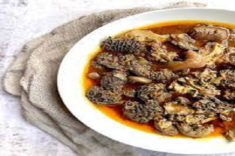

Welcome
Mogodu Monday , A weekly occasion wherein many make a celebration of the most unpopular day of the week, Mogodu Mondays see people flip the script by turning it into an enjoyable time over great food with friends and family at their local cafés, restaurants, and shisanyama spots.
After realising how different entrepreneurs failed as businesses were collapsed by Covid-19 lockdown impacts, some South African entrepreneurs came up with Mogodu Monday idea with the purpose of reviving their business. The aim was to have people relax and spend time on Monday at their venues from 12pm till late.
Mogodu Monday is not only about entertainment but giving back to the community and providing traditional meals which they all don’t want to see fading.Looking back at how great-grandmothers cooked Mogodu for families, we want our guests not only to remember old times but look up to it as the embodiment of these great cooks while they prepare mogodu for diners. Mogodu Monday to bring you the tasteful cuisine served with a variety of starch - including pap, samp and dumpling!
Phone:(012) 382-9872